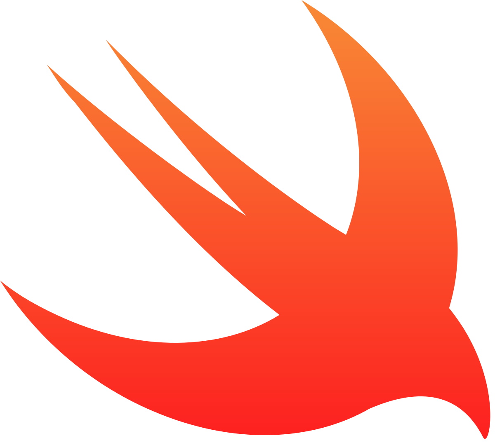

| Lenguajes |
Imagen |
Descripcion |
Link |
| Java |
 |
Java es un lenguaje de programación y una plataforma informática comercializada por primera vez en 1995 por Sun Microsystems. Hay muchas aplicaciones y sitios web que no funcionarán a menos que tenga Java instalado y cada día se crean más. Java es rápido, seguro y fiable. |
java |
| C |
 |
C es un lenguaje de programación de propósito general originalmente desarrollado por Dennis Ritchie entre 1969 y 1972 en los Laboratorios Bell, como evolución del anterior lenguaje B, a su vez basado en BCPL. |
C |
| Python |
 |
Python es un lenguaje de programación interpretado cuya filosofía hace hincapié en la legibilidad de su código. Se trata de un lenguaje de programación multiparadigma, ya que soporta orientación a objetos, programación imperativa y, en menor medida, programación funcional.
|
Python |
| C# |
 |
C#" es un lenguaje de programación multiparadigma desarrollado y estandarizado por la empresa Microsoft como parte de su plataforma .NET, que después fue aprobado como un estándar por la ECMA e ISO. C# es uno de los lenguajes de programación diseñados para la infraestructura de lenguaje común.
|
C# |
| C++ |
 |
C++ es un lenguaje de programación diseñado en 1979 por Bjarne Stroustrup. La intención de su creación fue extender al lenguaje de programación C mecanismos que permiten la manipulación de objetos. En ese sentido, desde el punto de vista de los lenguajes orientados a objetos, C++ es un lenguaje híbrido.
|
C++ |
| Visual Basic |
 |
Visual Basic es un lenguaje de programación dirigido por eventos, desarrollado por Alan Cooper para Microsoft. Este lenguaje de programación es un dialecto de BASIC, con importantes agregados.
|
Visual Basic.NET |
| .NET |
 |
.NET es un framework de Microsoft que hace un énfasis en la transparencia de redes, con independencia de plataforma de hardware y que permite un rápido desarrollo de aplicaciones.
|
.NET |
| javascript |
 |
JavaScript es un lenguaje de programación interpretado, dialecto del estándar ECMAScript. Se define como orientado a objetos, basado en prototipos, imperativo, débilmente tipado y dinámico.
|
javascript |
| PHP |
 |
PHP es un lenguaje de programación de uso general que se adapta especialmente al desarrollo web. Fue creado inicialmente por el programador danés-canadiense Rasmus Lerdorf en 1994. En la actualidad, la implementación de referencia de PHP es producida por The PHP Group.
|
PHP |
| Swift |
 |
Swift es un lenguaje de programación multiparadigma creado por Apple enfocado en el desarrollo de aplicaciones para iOS y macOS. Fue presentado en la WWDC 2014 y está diseñado para integrarse con los Frameworks Cocoa y Cocoa Touch; puede usar cualquier biblioteca programada en Objective-C y llamar a funciones de C.
|
Swift |
| SQL |
 |
SQL es un lenguaje declarativo estándar internacional de comunicación dentro de las bases de datos que nos permite a todos el acceso y manipulación de datos en una base de datos, y además se puede integrar a lenguajes de programación, por ejemplo ASP o PHP, y en combinación con cualquier base de datos específica, por ejemplo MySQL, SQL Server, MS Access, entre otras.
|
SQL |
| Ruby |
 |
Ruby es un lenguaje de programación interpretado, reflexivo y orientado a objetos, creado por el programador japonés Yukihiro "Matz" Matsumoto, quien comenzó a trabajar en Ruby en 1993, y lo presentó públicamente en 1995.
|
Ruby |